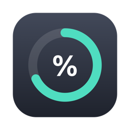
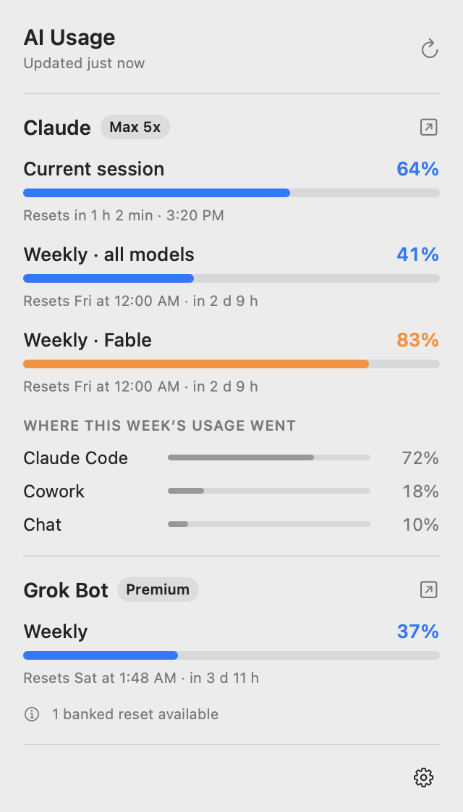
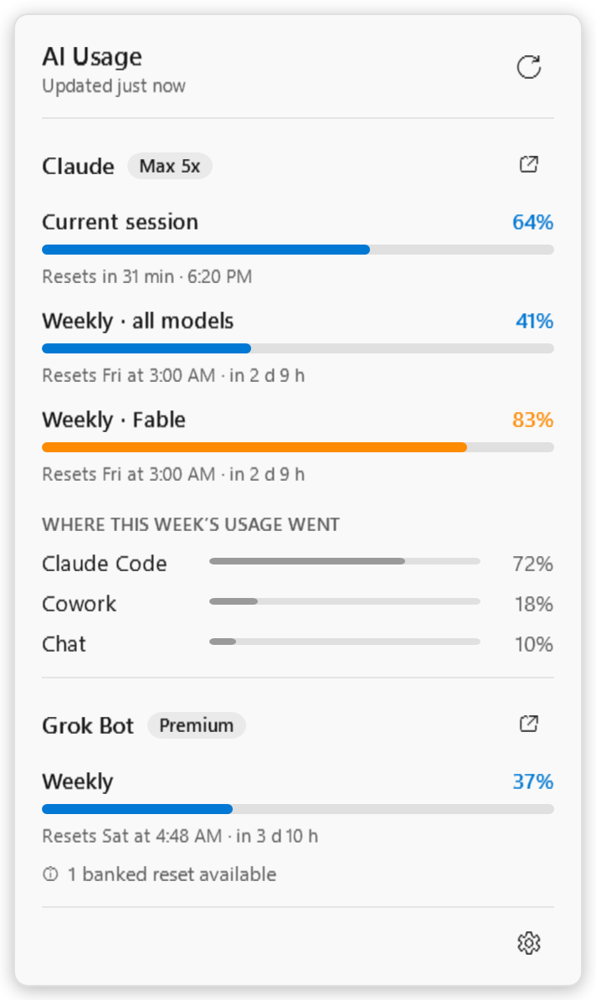
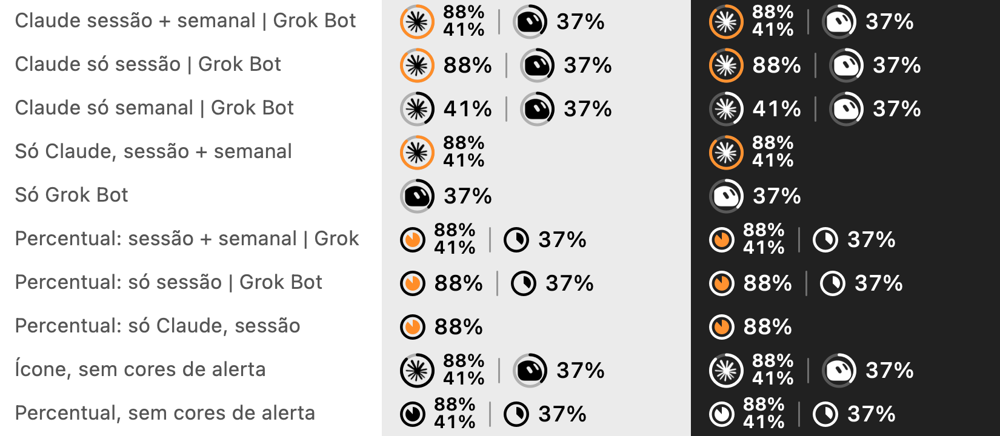

AI Usage BarAI Usage Bar shows how much of your Claude and Grok Bot plans you have used, right in the macOS menu bar or the Windows tray, and when each limit resets.
Free and open source (MIT). macOS 13+ and Windows 10/11.

Always the latest release, built by GitHub Actions straight from the source code.
Native app for macOS 13 or newer, Apple Silicon and Intel.
AIUsageBar-macOS.dmg
Installer for Windows 10 and 11 (64-bit). No admin rights needed.
AIUsageBar-Windows-Setup.exe
A single .exe that runs without installing. Handy for trying it out.
AIUsageBar-Windows-Portable.exe
The same numbers as claude.ai → Settings → Usage, Claude Code's /usage and Grok Bot's own Usage screen.
Current 5-hour session, weekly limit for all models, weekly per-model limits (like Fable) and where this week's usage went: Claude Code, Chat, Cowork.
Weekly limit and when it resets, plus banked resets and on-demand usage when your plan has them.
Each AI gets a ring that fills with usage, around its icon or its percentage. The ring turns orange or red as you get close to a limit.
Pick what each AI shows (session, weekly or both on macOS), the icon style, whether alert colors are on, and English or Portuguese.
It reuses the logins of the apps you already have, read only and in memory. Tokens are never stored, refreshed or sent anywhere but the service they belong to.
Swift and SwiftUI on macOS, C# and WPF on Windows. Small, fast and at home next to your other menu bar and tray icons.


macOS menu bar styles, with alert colors on and off.
The apps are not signed with paid Apple or Microsoft certificates yet, so each system asks you to confirm once.
Requirements: Claude Code signed in on the same computer (the Claude app or the claude command). For Grok Bot, the Grok Bot app installed and signed in. The Windows version is new; please report anything odd on GitHub.